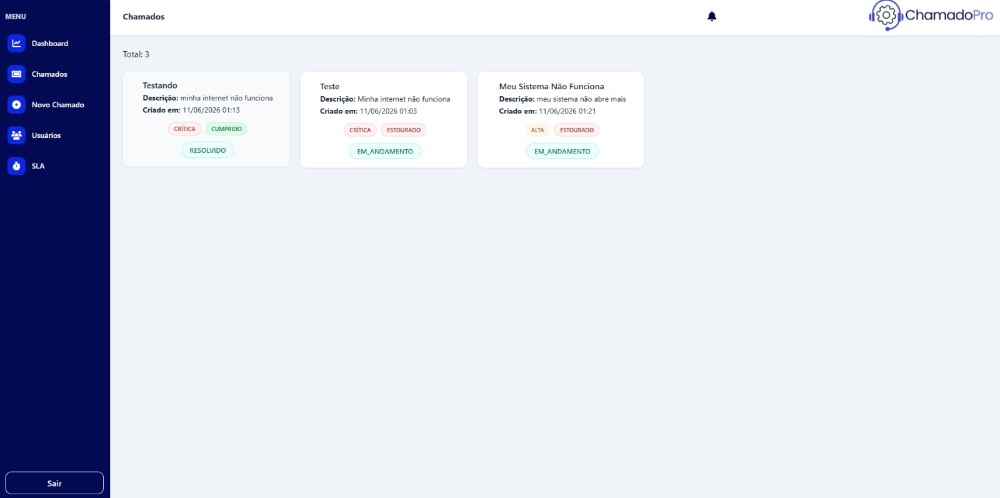
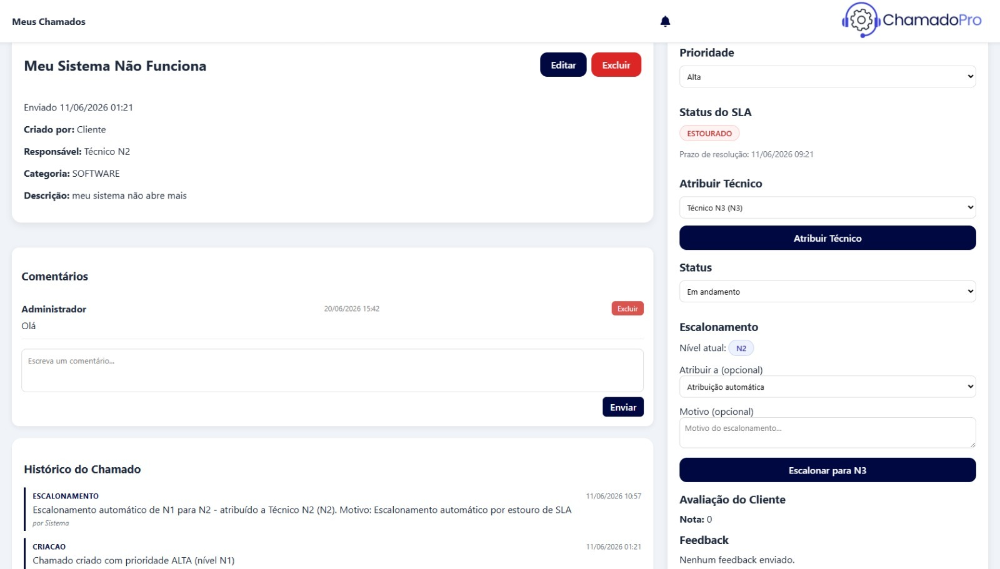
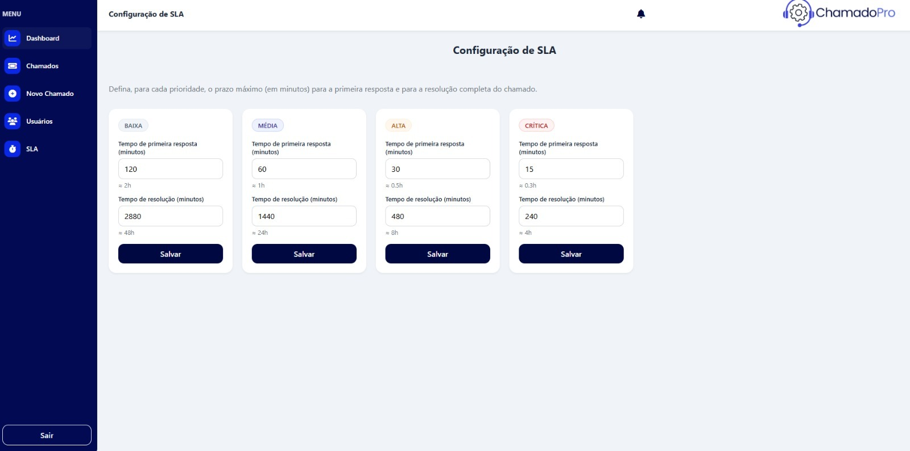
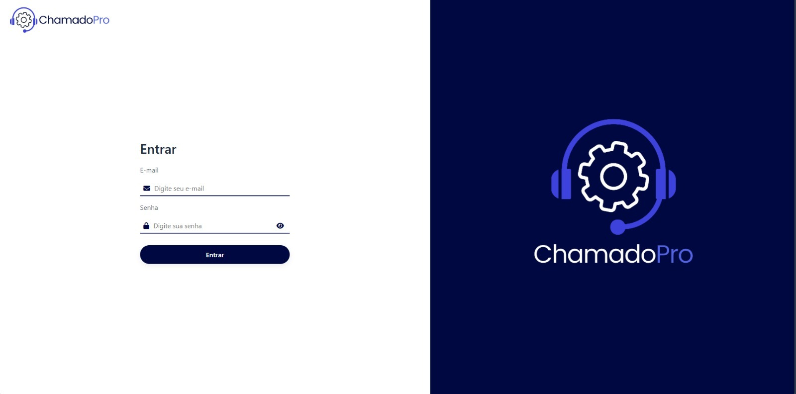

Projeto · Suporte de TI
Sistema para controle de tickets e chamados voltado a empresas de suporte de TI. Minha atuação foi exclusivamente no front-end, em Angular. A interface cobre todo o ciclo do atendimento: abertura de chamados, fila com prioridades e status, atribuição e escalonamento de técnicos por nível (N1/N2/N3), acompanhamento de SLA por prioridade e o histórico completo de cada chamado.



